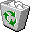
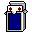

Print the page, or download the PDF
Computer Engineering, Boğaziçi University — İstanbul, Türkiye
Senior Computer Engineering student at Boğaziçi University with a fascination for pattern recognition and prediction. I apply this tendency across domains, from training ML and LLM models to analyzing markets.
Research Assistant at Boğaziçi University – TRACE (June 2026 – present). Previously Associate Data Scientist at Pegasus, AI Intern at Fimple, and Software Engineering Intern at Doping Technology.
barathanasln@gmail.com · LinkedIn · GitHub · TRACE Observatory · Craving Sugar (blog) · Download CV (PDF)
This page needs JavaScript for the full interactive CV.